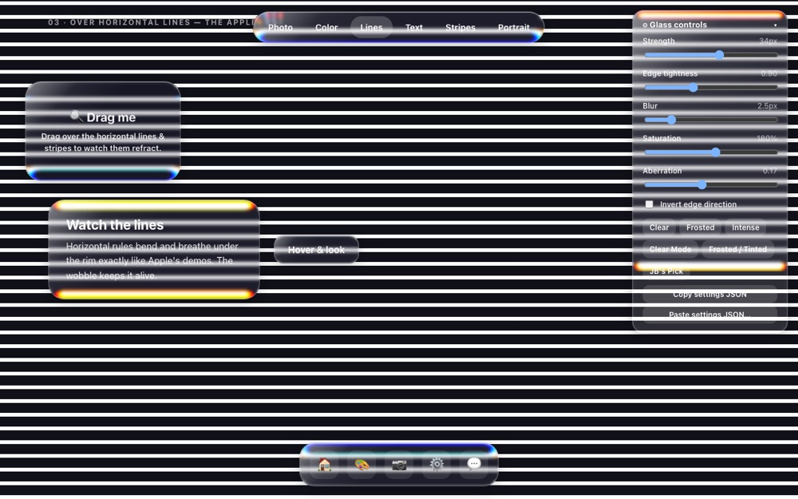
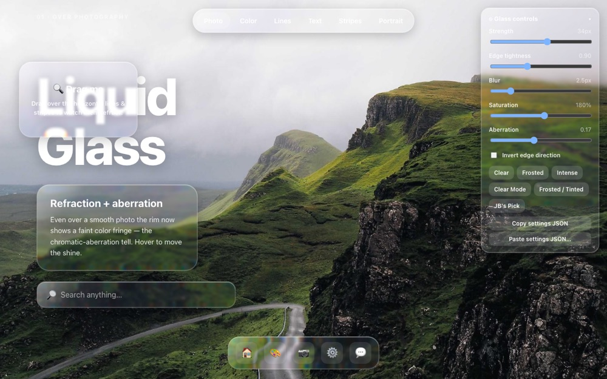

Best on desktop
Liquid Glass
A buildless, zero-dependency engine that gives the web Apple-style refractive glass: edges that bend the background, a faint color fringe, frost, and a living rim.
This one is a desktop thing
The refraction is powered by an SVG filter inside
backdrop-filter, and only Chromium browsers (Chrome, Edge,
Brave) actually render it. Every browser on iPhone and iPad runs on
Apple’s WebKit engine, which does not, so there is no way to show
the real effect on a phone yet.
It is not broken and it is not your browser. The web platform simply cannot do this on iOS today. So instead of a half-working page, here is what it looks like on a computer.

Panels bending the background at the rim, with chromatic aberration.

The interactive playground, with live controls and presets.
Open tools.jbradbixler.com/liquid-glass on a
desktop browser for the full thing.
Made by JBB · jbradbixler.com